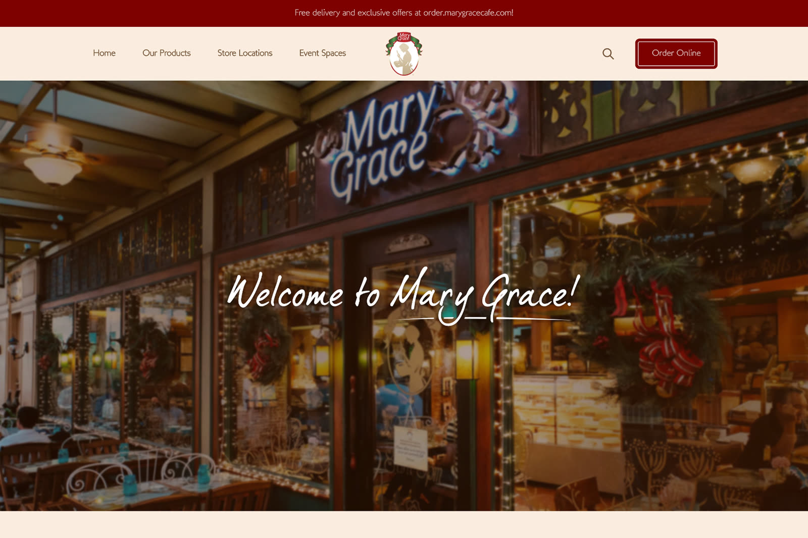

← All work
Mary Grace Café
| Case | 03 / 03 |
|---|---|
| Role | Frontend developer |
| Stack | Ruby on Rails |
| Until | 2024 |
| Live | marygracecafe.com ↗ |
Mary Grace is a well-loved Filipino café and bakery. I built the frontend of its website from the design, inside a Ruby on Rails app, and kept the brand’s warmth on every screen size.
I last worked on this in 2024; the live site may have changed since. The screenshot shows my version.

- delivery offer, always on top
- logo centred, nav split around it
- one button: Order Online
The brief
Turn the approved design into a responsive site that feels like the cafés themselves, with online ordering one tap away.
What I did
- Built the frontend inside the Rails app, responsive from phone to desktop.
- Kept the brand’s details intact on every screen: the script lettering, the cream and maroon, the centred logo.
- Kept the delivery offer and the Order Online button at the top of the page.
- Matched the design closely, so the brand team saw their layout, not an approximation.
What shipped
The public website, live in the Rails app. See it live ↗